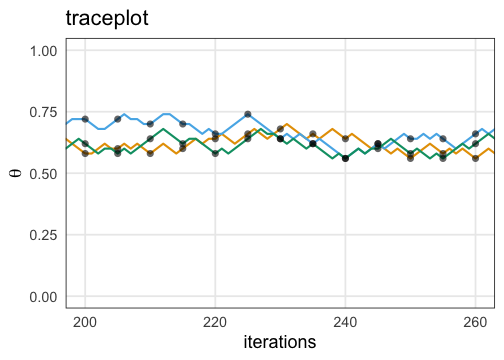

統計モデリング概論 DSHC 2021
(Graduate School of Life Sciences, Tohoku University)
コイントス4回、たまたま表が1回だったら
- 最尤法(頻度主義)
- 尤もらしいパラメータを点推定。
- データが少ないとき過剰適合気味。
- 表が出る確率 p = 0.25 のコインだろう。
(信じ難いけどデータはこう言っている)
- ベイズ推定
- 推定結果は確率分布そのもの。
- データが少ないなりの不確実さも表現。
- p = 0.25 らへんである確率は高いが、
p = 0.6 とかである可能性もまあある。


コイントスの回数が増えていったら
最尤法(頻度主義): 推定値が真の値に近づいていく

ベイズ推定: 確率分布がどんどん尖り、確信が強まる
確率おさらい
- 同時分布/結合確率: AかつBの確率
- $\text{Prob}(\textcolor{#E69F00}{A}, \textcolor{#0072B2}{B}) = \text{Prob}(\textcolor{#E69F00}{A} \cap \textcolor{#0072B2}{B}) = \text{Prob}(\textcolor{#E69F00}{A}) \text{Prob}(\textcolor{#0072B2}{B})$
- 周辺確率: BによらずAになる確率
- $\text{Prob}(\textcolor{#E69F00}{A}) = \sum_{\textcolor{#0072B2}{B}} \text{Prob}(\textcolor{#E69F00}{A}, \textcolor{#0072B2}{B})$
- 条件付き確率: BのときAになる確率
- $\text{Prob}(\textcolor{#E69F00}{A} \mid \textcolor{#0072B2}{B}) = \frac {\text{Prob}(\textcolor{#E69F00}{A}, \textcolor{#0072B2}{B})} {\text{Prob}(\textcolor{#0072B2}{B})}$

条件付き確率がよくわかる具体例
- B BreweryのビールがAwesomeな確率
- $\text{Prob}(\textcolor{#E69F00}{\text{Awesome}} \mid \textcolor{#0072B2}{\text{B Brewery}}) = \frac {\text{Prob}(\textcolor{#E69F00}{\text{Awesome}},~\textcolor{#0072B2}{\text{B Brewery}})} {\text{Prob}(\textcolor{#0072B2}{\text{B Brewery}})}$
- かなり高い確率。良い醸造所。
- AwesomeなビールがB Breweryのものである確率
- $\text{Prob}(\textcolor{#0072B2}{\text{B Brewery}} \mid \textcolor{#E69F00}{\text{Awesome}}) = \frac {\text{Prob}(\textcolor{#E69F00}{\text{Awesome}},~\textcolor{#0072B2}{\text{B Brewery}})} {\text{Prob}(\textcolor{#E69F00}{\text{Awesome}})}$
- かなり低い確率。Awesomeなビールはほかにもたっくさんある。
ベイズの定理
- 乗法定理
- $\text{Prob}(\textcolor{#E69F00}{A},~\textcolor{#0072B2}{B}) = \text{Prob}(\textcolor{#E69F00}{A} \mid \textcolor{#0072B2}{B})~\text{Prob}(\textcolor{#0072B2}{B}) = \text{Prob}(\textcolor{#0072B2}{B} \mid \textcolor{#E69F00}{A})~\text{Prob}(\textcolor{#E69F00}{A})$
移項するだけでベイズの定理:

宴会場にビールが運ばれてきた。これはどこのブルワリーの？
- 事前確率: $\text{Prob}(\textcolor{#0072B2}{B})$
- 飲む前、手元のビールがB Breweryのである確率。
- ↓ 🍻 飲んでみて更新
- 事後確率: $\text{Prob}(\textcolor{#0072B2}{B} \mid \textcolor{#E69F00}{A})$
- 飲んでみてAwesomeだったビールが B Breweryのである確率。
ベイズの定理 in 感染症検査
- 有病率 $\text{Prob}(M)$ : 2% (この地域の感染者の割合)
- 感度 $\text{Prob}(P \mid M)$ : 80% (感染してる人に陽性判定が出る)
- 特異度 $\text{Prob}(N \mid \overline{M})$: 99% (感染してない人に陰性判定が出る)
$\text{Prob}(M \mid P)$ 真陽性率(検査陽性の人が実際に感染者である確率)は？
🔰 同様に真陰性率、偽陽性率、偽陰性率を計算してみよう
🔰 計算結果が検査精度だけでなく有病率によっても変わることを確認しよう
ベイズの定理 in 統計モデリング

周辺尤度は「確率分布の積分は1」を満たすための正規化定数とみなせる。
比例関係だけ抜き出してこう書くことが多い:
モデルの事後分布 $\text{Prob}(\mathcal M \mid \mathcal D)$ は次の積に比例する:
- 尤度 $\text{Prob}(\mathcal D \mid \mathcal M)$: モデル$\mathcal M$の下で観察データ$\mathcal D$を得る確率
- 事前分布 $\text{Prob}(\mathcal M)$: データ$\mathcal D$を得る前の思い込み
解析前から持ってるモデル$\mathcal M$のに対すを、 データ$\mathcal D$を得て尤度計算して更新、 データ 確信の度合いをデータによって更新するようなイメージ。
逐次学習
コイントス4回のうち表1回、に基づく事前分布: $\text{Beta}(p \mid 1, 3)$
さらに16回投げたら表が7回、の尤度: $\text{Binomial}(7 \mid 16,~p)$
事後分布を計算してみると、事前分布と同じ形になる:
これを事前分布としてまた新しいデータで更新できる。
共役事前分布
事後分布が事前分布と同じ形なので計算しやすい、という組み合わせ。
| 尤度関数 | 共役事前分布 |
|---|---|
| 二項分布 | ベータ分布 |
| ポアソン分布 | ガンマ分布 |
| 正規分布 | ガンマ分布 |
| 正規分布 (分散既知) | 正規分布 |
共役事前分布を使うことが常に正しいとも限らない。
計算コストがかかっても無情報事前分布を使う風潮。
事後分布を用いた推定
- 区間推定
- 幅のある推定値を提示
- e.g., 95%ベイズ確信区間
(credible interval) - 点推定
- 値を1点だけ提示
- e.g., MAP推定
コイン投げモデルのベータ分布は美しい例。
→ 解析的(数学的)に解ける。
実践的なモデル・事後分布はもっと複雑。
→ コンピュータに頼って数値計算: MCMC
MCMC: Marcov Chain Monte Carlo


モンテカルロ法は乱数を用いた計算方法
e.g., 半径1の円の面積
面積4の正方形に400個の一様乱数を打ち込んだら318個乗った:
$4 \times \frac {318} {400} = 3.18$

数学を知っていれば $\pi r ^ 2 \approx 3.14$
変な分布もモンテカルロ法で扱えそう
e.g., 確率密度分布に従って変数Xを集める(棄却サンプリング)。

でも、ハズレの値もけっこう引いてしまう。
次元の呪い: 高次元になるほど当たりにくくなる
(N次元球の体積 / N次元の立方体) はゼロに近づいていく。
- 2次元: $\frac {\pi r ^ 2} {(2r) ^ 2} = \frac \pi 4 \approx 0.79$
- 3次元: $\frac {\frac 4 3 \pi r ^ 3} {(2r) ^ 3} = \frac \pi 6 \approx 0.52$
- N次元: $\frac {\frac {\pi ^ {N/2}} {\Gamma (N/2 + 1)} r ^ N} {(2r) ^ N} = \frac {\pi ^ {N/2}} {2^N \Gamma (N/2 + 1)} \to 0$
パラメータが増えると計算量(≈乱数の無駄撃ち)が急増。
密度の高い「当たり」付近を効率よく探索したい。
「当たり」は「当たり」の近くにありがちだろう。
→ マルコフ連鎖が使えそう
Metropolis–Hastings法 (MH法)
- パラメータ $\theta$ の初期値を選ぶ
- $\theta$ をちょっと増減させて $\theta_\text{new}$ を作る
- それぞれ尤度を計算し、比較。
- $L(\theta_\text{new}) \ge L(\theta)$ なら $\theta_\text{new}$ を即採択
- $L(\theta_\text{new}) < L(\theta)$ でも 確率 $r = \frac {L(\theta_\text{new})} {L(\theta)}$ で $\theta_\text{new}$ を採択
- $\theta_\text{new}$ が採択されたら $\theta$ を更新。手順1に戻る。
採択されたパラメータ値の軌跡
尤度が高い方にただ向かうだけでなく、結構うろつく。

採択されたパラメータ値の軌跡
尤度が高い方にただ向かうだけでなく、結構うろつく。
通ったパラメータ値を集めるといい感じの分布が得られる。

尤度に比例する事後分布からサンプルしたのと等価
全体にばら撒く棄却サンプリングよりも効率よく集められる。
が、パラメータ1つの1次元ではご利益はわかりにくい。

パラメータが複数ある場合は？
Gibbs Sampling
「ほかを固定してひとつ更新」を繰り返す。
e.g., 二次元正規分布。(-2, 2) からスタート。

TODO: アニメーション、周辺分布
中間まとめ
- ベイズ推定では不確実性も表現できる。
- コンピュータに頼った計算方法としてのモンテカルロ法。
- 多次元でも効率よくサンプルするためのMCMC。
ここから、実行するにあたっての注意点を見ていく。
何回やっても似たような結果になってほしい
乱数や初期値によって偶々、じゃないことを確認したい。
e.g., chains = 3, iter = 600 。ほぼ同じところをうろうろ:

収束(convergence)の判定については後ほど。
初期値の影響が消えるまでウォーミングアップ
定常分布の山に到達してからが本番。
e.g., iter = 600, warmup = 200 で灰色の部分を捨てる:

どれくらい長く捨てるべきかは場合による。
適度に間引いて自己相関を軽減したい
直前の値と似すぎていたら独立サンプルとして扱えないので。
e.g., thin = 5 で5回に1回だけサンプルする:

間引かなくても大丈夫な場合も、間引いても解決しない場合もある。
収束判定
- 複数chains・複数初期値で実行し、軌跡や分布を可視化
- Gelman-Rubin統計量 $\hat R < 1.05$
- Effective Sample Size (ESS) $N_\text{eff} > 100$ per chain
TODO: 収束してる例 vs してない例
収束・自己相関が悪い場合にどう改善するか
- 小手先の対処
- warmupとiterをもっと長くする
- thinを大きくして間引く
- ちょっと大掛かり
- モデルを見直す
- プログラムを見直す
- アルゴリズム・ソフトウェアを変える
MCMCの方法いろいろ
採択率を高め、早く収束するように改良されてきている。
- Metropolis–Hastings法
- Gibbs Sampling
- Hamiltonian Monte Carlo (HMC)
- No-U-Turn Sampler (NUTS)
MCMCソフトウェア
Stan
- C++で書かれている
- Stan言語でモデルを書く
- PythonやRなどから呼び出して使うのが便利
おおまかな流れ in R
TODO: in Python
mydata = readr::read_tsv("mydata.tsv.gz")
# Stan言語で書いたモデルをコンパイル
model1 = rstan::stan_model(file = "model1.stan")
# MCMCサンプリング
fit1 = rstan::sampling(model1, data = mydata)
# 結果を眺める
summary(fit1)
rstan::stan_trace(fit)
rstan::stan_hist(fit)
rstan::stan_ac(fit)
Stan言語でモデルを書く
いくつかのブロックに分ける。
data { // passed from R/Python
int<lower=0> N;
real x[N];
}
parameters { // sampled via MCMC
real mu;
real<lower=0> sigma;
}
model {
x ~ normal(mu, sigma);
}
Stan言語の7種のブロック
順番厳守。使うのはだいたい太字のやつだけ。
functions {...}data {...}transformed data {...}parameters {...}transformed parameters {...}model {...}generated quantities {...}
変数の型
整数と実数は区別される。
配列的なものが複数あってややこしい。
# scalar
int N;
real x;
# linear algebra
vector[N] v;
row_vector[N] rv;
matrix[M, N] m;
# array
real a[N];
TODO: rstan 2.27 が出たら array syntax 更新
data {...}
R/Pythonから受け取る定数の宣言。
配列の大きさは動的に変えられない。
上限・下限を設定可能。
data {
int<lower=0> N;
real x[N];
}
parameters {...}
サンプリングされる変数の宣言。
parameters {
real mu;
real<lower=0> sigma;
}
model {...}
確率変数と事前分布・パラメータの関係を記述。
model {
x ~ normal(mu, sigma);
}
このようにチルダを使うのは“sampling statement”。
代わりに target += normal_lpdf(x | mu, sigma);
のように対数確率の加算を明示的に書いてもいい。
サンプルされないローカル変数を宣言してもよいが、制約をかけることはできない。
関数
定義済みの関数がたくさんある。
functions ブロックで新しい関数を定義することも可能:
real radius(real x, real y) {
return sqrt(x ^ 2 + x ^ 2);
}
Other blocks
transformed data {...}
dataブロックで読み込む変数の決定論的変換- 決め打ちのハイパーパラメータを宣言するとか
transformed parameters {...}
modelで使いやすい形にパラメータを変形しておくとか
generated quantities {...}
- サンプリング後の値を使って好きなことをする。 ここを使わずR/Pythonで結果を受け取ってからどうにかするほうが簡単。
説明変数なしのベイズ推定をやってみる
線形単回帰をわざわざStanでやってみる
非線形回帰
非対称なひと山。応答変数も説明変数も正の値。

練習問題
階層ベイズモデル
GLMでは説明できない現象

二項分布なはずなのに、おかしい
生存種子
個体差が過分散を起こしてるっぽい
個体差をモデルに組み込みたい
個体差をそのままモデルに組み込むと過剰適合
(パラメータ数 ≥ サンプルサイズ)
個体差を「平均0、標準偏差$s$の正規分布」としてモデル化
パラメータ1つの追加で済む
モデルの全体像
事前分布のパラメータに、さらに事前分布を設定するので階層ベイズ
超パラメータ、超事前分布
階層ベイズをStanで書くと
うまくフィットできた
事後分布からのMCMCサンプル
個体差だけでなく、グループ差も考慮
階層ベイズモデルのほかの応用先
- 時系列モデル (状態空間モデル)
- 空間構造のあるモデル (e.g., CARモデル)
- 欠損値の補完
TODO: それぞれ理論・実践を紹介する？
事前分布の選別
-
とりあえず無情報事前分布 $[-\infty, \infty]$。Stanのデフォルト。
-
収束が悪かったら弱情報事前分布を試す。
事後分布を更新していったとき事前分布っぽさが残らないのが良い。- 取りうる値を逃すような狭すぎる分布はダメ。
- 狭すぎるよりはマシだが、広すぎても良くない。
- 一様分布 $[a, b]$ は一見無情報っぽくて良さそうだが、
事後分布に裾野が残ったり絶壁ができたりしがちなので微妙。
おすすめ: Student’s t分布、正規分布、指数分布など。
https://github.com/stan-dev/stan/wiki/Prior-Choice-Recommendations
Stanおすすめ弱情報事前分布: Student’s t分布
Student’s $t(\nu=\nu_0, \mu = 0, \sigma = \sigma_0)$
- 自由度 $\nu$: 小さいほど裾野が広い。$3 \le \nu_0 \le 7 $ で適当に固定。
- スケール $\sigma$: 「推定したい値は$[-\sigma_0, \sigma_0]$に収まるだろう」という値。

正の値しか取らない場合は <lower=0> として右半分だけ使うとか。
区間推定: ベイズ確信区間 (credible interval)
e.g., 95%ベイズ確信区間 (credible interval): 真の値が95%の確率で含まれる区間。
等裾事後信用区間 (equal-tailed interval): 両端から2.5%ずつ削る
TODO: 図
最高密度区間 (highest density interval): 分布密度に閾値を設ける
TODO: 図
点推定
- 事後中央値 (Posteriori Median: MED)
- 事後期待値 (Expected A Posteriori: EAP)
- 事後確率最大値 (Maximum A Posteriori: MAP)
TODO: 図
ベイズ推定まとめ
階層ベイズの練習問題
全体まとめ
参考文献
- データ解析のための統計モデリング入門 久保拓弥 2012
- StanとRでベイズ統計モデリング 松浦健太郎 2016
- RとStanではじめる ベイズ統計モデリングによるデータ分析入門 馬場真哉 2019
- 統計学を哲学する 大塚淳 2020
- データ解析のための数理モデル入門 江崎貴裕 2020
- 分析者のためのデータ解釈学入門 江崎貴裕 2020